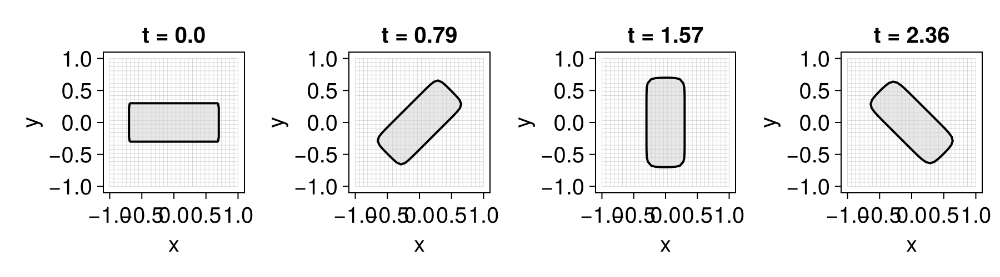
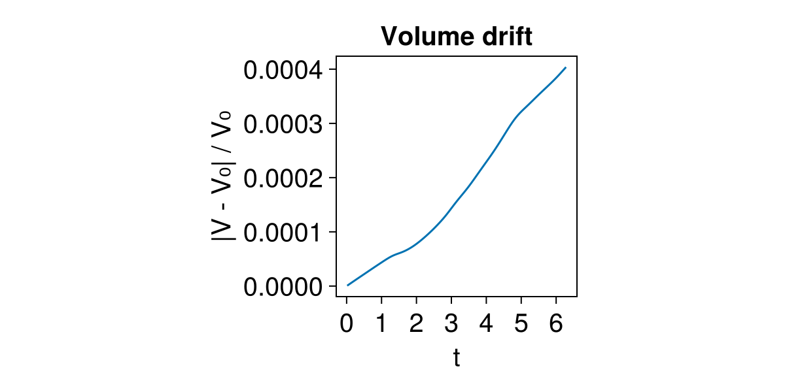

Level-set equation
The LevelSetEquation is the central object of the package. It bundles everything needed to evolve an interface — the current state $\phi$, the terms that move it, the time integrator, and the boundary conditions — into a single value that you advance in time with integrate!. The equation has the form
\[\phi_t + \sum_n \texttt{term}_n = 0 ,\]
where each $\texttt{term}_n$ is a LevelSetTerm. This page covers how to build an equation, inspect it, and step it forward; the individual terms, integrators, and boundary conditions each have their own chapter.
Building an equation
A LevelSetEquation is constructed with keyword arguments:
using LevelSetMethods
grid = CartesianGrid((-1, -1), (1, 1), (32, 32))
ϕ₀ = MeshField(x -> hypot(x...) - 0.5, grid) # initial level set: a circle
eq = LevelSetEquation(;
terms = AdvectionTerm((x, t) -> (-x[2], x[1])), # rotate about the origin
ic = ϕ₀, # initial condition (copied internally; the original is left untouched)
bc = NeumannBC(), # boundary conditions
integrator = RK2(), # time integrator (default)
t = 0.0, # initial time (default)
)LevelSetEquation
├─ equation: ϕₜ + 𝐮 ⋅ ∇ ϕ = 0
├─ time: 0.0
├─ integrator: RK2 (2nd order TVD Runge-Kutta, Heun's method)
│ └─ cfl: 0.5
├─ state: MeshField on CartesianGrid in ℝ²
│ ├─ domain: [-1.0, 1.0] × [-1.0, 1.0]
│ ├─ nodes: 32 × 32
│ ├─ spacing: h = (0.06452, 0.06452)
│ ├─ bc: Neumann (all)
│ ├─ valtype: Float64
│ └─ values: min = -0.4544, max = 0.9142
╰─The keywords are:
terms— aLevelSetTermor a tuple of them. With several terms the equation is their sum; the displayed equation reflects this. See Level-set terms.ic— the initial condition, any mesh field. A denseMeshFieldgives a full-grid computation; aNarrowBandMeshFieldgives a narrow-band one (see Narrow-band fields). It is copied on construction, so your original field is left untouched; the evolving state lives incurrent_state.bc— the boundary conditions. They may instead be carried byic(built with thebckeyword); supplying both warns and the equation'sbcwins. A single condition applies to every face; a per-dimension tuple applies different ones.integrator— the time integrator; defaults toRK2.t— the initial time; defaults to0.
Passing several terms sums them, and the displayed equation updates accordingly:
LevelSetEquation(;
terms = (AdvectionTerm((x, t) -> (-x[2], x[1])), CurvatureTerm((x, t) -> -0.01)),
ic = ϕ₀,
bc = NeumannBC(),
)LevelSetEquation
├─ equation: ϕₜ + 𝐮 ⋅ ∇ ϕ + b κ|∇ϕ| = 0
├─ time: 0.0
├─ integrator: RK2 (2nd order TVD Runge-Kutta, Heun's method)
│ └─ cfl: 0.5
├─ state: MeshField on CartesianGrid in ℝ²
│ ├─ domain: [-1.0, 1.0] × [-1.0, 1.0]
│ ├─ nodes: 32 × 32
│ ├─ spacing: h = (0.06452, 0.06452)
│ ├─ bc: Neumann (all)
│ ├─ valtype: Float64
│ └─ values: min = -0.4544, max = 0.9142
╰─Inspecting the state
The equation exposes its parts through accessors. current_time returns the current time, and current_state the mesh field holding $\phi$ at that time:
current_state(eq)MeshField on CartesianGrid in ℝ²
├─ domain: [-1.0, 1.0] × [-1.0, 1.0]
├─ nodes: 32 × 32
├─ spacing: h = (0.06452, 0.06452)
├─ bc: Neumann (all)
├─ valtype: Float64
└─ values: min = -0.4544, max = 0.9142The state is a live mesh field: you can index it, compute geometric quantities on it (see Geometric quantities), or pass it to reinitialize!. The underlying CartesianGrid, the tuple of terms, the integrator, and the boundary conditions are likewise available with LevelSetMethods.mesh, LevelSetMethods.terms, LevelSetMethods.time_integrator, and LevelSetMethods.boundary_conditions.
Advancing in time
integrate! evolves the equation up to a final time tf, mutating current_state(eq) and current_time(eq) in place:
integrate!(eq, 0.5)
current_time(eq)0.5The internal time step is chosen automatically from a CFL condition that depends on the terms and the integrator, so you only specify where to stop, not how. An optional third argument caps the step from above — useful when an external process (a hook, a coupled solver) must see the solution at least that often:
integrate!(eq, 1.0, 0.01) # continue to t = 1, with no internal step exceeding Δt = 0.01
current_time(eq)1.0Because integrate! is incremental, calling it repeatedly at increasing times steps the same equation forward — the idiom behind animations and the snapshots below:
using CairoMakie
CairoMakie.activate!()
LevelSetMethods.set_makie_theme!()
eq = LevelSetEquation(; terms = AdvectionTerm((x, t) -> (-x[2], x[1])),
ic = MeshField(x -> maximum(abs.(x) .- (0.7, 0.3)), grid),
bc = NeumannBC())
fig = Figure(; size = (900, 250))
for (n, t) in enumerate((0.0, π / 4, π / 2, 3π / 4))
integrate!(eq, t)
ax = Axis(fig[1, n]; title = "t = $(round(t; digits = 2))")
plot!(ax, eq)
end
fig
Hooks: customizing each step
Two optional callbacks let you run code around each accepted step (as opposed to each internal Runge–Kutta stage): prehook(eq) runs at the start of a step, before the state is advanced, and posthook(eq) runs after the step has been committed. Both receive the equation with its state and time synced to that point, and both may mutate the state. Their return values are ignored.
The most important use is reinitialization. Keeping $\phi$ a signed distance function is not built into the integrator; you drive it from a posthook (see Reinitialization):
eq = LevelSetEquation(; terms = AdvectionTerm((x, t) -> (-x[2], x[1])), ic = ϕ₀, bc = NeumannBC())
integrate!(eq, π / 2; posthook = e -> reinitialize!(current_state(e)))Because the hook is an ordinary function, you control when it fires — every step, or gated on a step counter, the elapsed current_time(e), or a measured drift of $|\nabla\phi|$ from one. A posthook is also the natural place for diagnostics. Here we record the enclosed volume after every step and plot its drift from the initial value — a direct measure of how well this divergence-free rotation conserves mass:
eq = LevelSetEquation(; terms = AdvectionTerm((x, t) -> (-x[2], x[1])), ic = ϕ₀, bc = NeumannBC())
V₀ = LevelSetMethods.volume(current_state(eq))
times, errs = Float64[], Float64[]
integrate!(eq, 2π; posthook = e -> begin
push!(times, current_time(e))
push!(errs, abs(LevelSetMethods.volume(current_state(e)) - V₀) / V₀)
end)
fig = Figure(; size = (600, 300))
ax = Axis(fig[1, 1]; xlabel = "t", ylabel = "|V - V₀| / V₀", title = "Volume drift")
lines!(ax, times, errs)
fig
Where to go next
Each ingredient of the equation has a dedicated chapter:
- Level-set terms — the building blocks of the right-hand side and how to customize them.
- Time integration — the available integrators and their trade-offs.
- Boundary conditions — the conditions and how to set them per face.
- Signed distance functions — keeping $\phi$ well-behaved with
reinitialize!, the main use ofposthook.